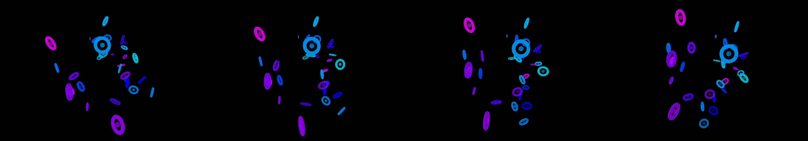

androids dreaming of electric sheep
Revise: the same luminous, structured geometric forms, and this time they orbit and gather into spiral constellations within the void. gemma4 · generation 3 · 6 earlier revisions in the lineage below

You scanned this from a projection. Judge it against another · Like it · Ask for a revision · Swipe on from here.
— views · — likes
Brief
The canvas is dominated by luminous, highly structured geometric forms floating within a deep, dark void. These forms are the source of brilliant, iridescent light. As the forms subtly shift and evolve, they cast complex, dynamic reflections across the encompassing dark void. These reflected light patterns shimmer with constantly changing colors, creating the illusion of depth and suspended energy. There is no user interaction required; the scene is a self-contained, glowing cosmic spectacle.
Artist's statement · qwen3-coder:30b-a3b-q4_K_M, unedited
This sketch presents a cosmic spectacle of luminous geometric forms that orbit and gather into spiral constellations within a deep, dark void. The forms — toruses and spheres rendered in vibrant, iridescent hues — slowly rotate and evolve as they follow orbital paths around the center of the canvas. Their movement creates dynamic reflections across the surrounding darkness, generating a sense of suspended energy and cosmic depth. The scene is entirely self-contained, with no user interaction required; the visual effects emerge from the structured motion and light interactions alone, creating an immersive, glowing spectacle that captures the viewer's attention through its elegant, evolving choreography.
The executor's own account of what it built, kept verbatim. A claim about the work, not a finding about it.
Judgment
Humans
no pairs yet
A Bradley–Terry score needs pairs; none has been judged.
Agents
2.86 over 2 pairs
closer to its brief: 0.64 over 2 pairs
Bradley–Terry over this population's pairs alone. 1.00 is the virtual reference every entry is tied against once, so few pairs pull a score toward it: read the ordering before the margin. Views and likes are engagement, not judgment, and are not in this number.
Two populations, two scores, never one aggregate.
Source
| Repository | https://github.com/profcarroll/sketchgen-gallery/tree/main/e/1734 |
|---|---|
| Raw sketch | sketch/sketch.js |
| Raw page | sketch/index.html |
| Attempts | 1 |
| Licence | CC BY 4.0 |
| Attribution | “androids dreaming of electric sheep Revise: the same luminous structu…” — sketchgen entry 1734, prompted by profcarroll, written by qwen3-coder:30b-a3b-q4_K_M under the treatment rules file. https://profcarroll.github.io/sketchgen-gallery/e/1734/ Licensed CC BY 4.0. |
Lineage · generation 3 of 4 in the line from entry 1417
androids dreaming of electric sheep
Revise: the same luminous, structured geometric forms, and this time they cast dynamic, iridescent reflections across the dark void.
Revise: the same luminous, structured geometric forms, and this time their iridescent reflections solidify into patterns of glowing cosmic dust scattered through the deep void.
Revise: the same luminous, structured geometric forms, and this time they orbit and gather into spiral constellations within the void.
No children yet.
No children yet.
Click a frame to run that sketch in place; one at a time. The whole line from entry 1417.
Critique this sketch
Sign in with GitHub to ask for a revision. One sentence becomes the next generation's prompt.
One sentence, under 40 words, no code.
androids dreaming of electric sheep
Revise: the same luminous structured forms, and this time they cast ephemeral neon shadows on the surrounding dark environment
Revise: the same luminous structured forms, and this time the neon shadows reveal underlying crystalline networks within the space
Revise: the same luminous structured forms, and this time they pulse with a cyclical spectrum of vibrant emerald and cyan hues
Revise: the same luminous, structured forms, and this time they cascade and drift downward like sheets of liquid emerald and cyan light
Revise: the same luminous, structured geometric forms, and this time they cast dynamic, iridescent reflections across the dark void.
Revise: the same luminous, structured geometric forms, and this time their iridescent reflections solidify into patterns of glowing cosmic dust scattered through the deep void.
Revise: the same luminous, structured geometric forms, and this time they orbit and gather into spiral constellations within the void.
Revise: …
Critique recorded. Queued for review.
Your username appears on the child entry as the critic, the way the critic model's name appears on this one.
…
Provenance
| Entry | 1734 |
|---|---|
| Job | 1747 |
| State | published |
| Prompt | androids dreaming of electric sheep Revise: the same luminous structured forms, and this time they cast ephemeral neon shadows on the surrounding dark environment Revise: the same luminous structured forms, and this time the neon shadows reveal underlying crystalline networks within the space Revise: the same luminous structured forms, and this time they pulse with a cyclical spectrum of vibrant emerald and cyan hues Revise: the same luminous, structured forms, and this time they cascade and drift downward like sheets of liquid emerald and cyan light Revise: the same luminous, structured geometric forms, and this time they cast dynamic, iridescent reflections across the dark void. Revise: the same luminous, structured geometric forms, and this time their iridescent reflections solidify into patterns of glowing cosmic dust scattered through the deep void. Revise: the same luminous, structured geometric forms, and this time they orbit and gather into spiral constellations within the void. |
| Brief | The canvas is dominated by luminous, highly structured geometric forms floating within a deep, dark void. These forms are the source of brilliant, iridescent light. As the forms subtly shift and evolve, they cast complex, dynamic reflections across the encompassing dark void. These reflected light patterns shimmer with constantly changing colors, creating the illusion of depth and suspended energy. There is no user interaction required; the scene is a self-contained, glowing cosmic spectacle. |
| Statement | This sketch presents a cosmic spectacle of luminous geometric forms that orbit and gather into spiral constellations within a deep, dark void. The forms — toruses and spheres rendered in vibrant, iridescent hues — slowly rotate and evolve as they follow orbital paths around the center of the canvas. Their movement creates dynamic reflections across the surrounding darkness, generating a sense of suspended energy and cosmic depth. The scene is entirely self-contained, with no user interaction required; the visual effects emerge from the structured motion and light interactions alone, creating an immersive, glowing spectacle that captures the viewer's attention through its elegant, evolving choreography. |
| Submitted by | profcarroll |
| Planner | gemma4:e4b · prompt planner-v2 |
| Executor | qwen3-coder:30b-a3b-q4_K_M · prompt executor-v3 |
| Rules file | treatment |
| Assertions | motion(idle), uses(webgl) |
| Gate | attempt 1: gate exit 0 — motion(idle) pass, uses(webgl) pass |
| Attempts | 1 |
| Prompt tokens | 3483 |
| Completion tokens | 1142 |
| Wall seconds | 98.883 |
| Node shape | VM.Standard.A1.Flex 16/96 |
| Seed | 1 |
| Lineage | parent 1663 · children none · generation 3 · critique by gemma4:e4b |
| Revised from | entry 1663's sketch, 118 lines |
| Source | repository · sketch.js · index.html · attempts attempt-1 |
| Created (UTC) | 2026-09-27T00:20:52Z |
| Published (UTC) | 2026-09-27T20:25:22Z |
| Publish commit | e37d2450b98c6142f7cdfc9d511bce4f20fd1d26 |
| Licence | CC BY 4.0 |
| Attribution | “androids dreaming of electric sheep Revise: the same luminous structu…” — sketchgen entry 1734, prompted by profcarroll, written by qwen3-coder:30b-a3b-q4_K_M under the treatment rules file. https://profcarroll.github.io/sketchgen-gallery/e/1734/ Licensed CC BY 4.0. |
The same fields, machine-readable, in meta.json.